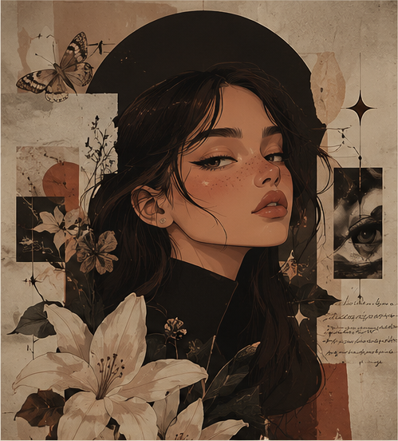
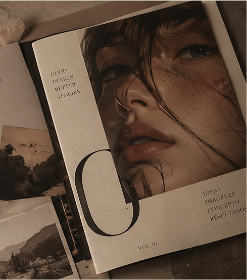
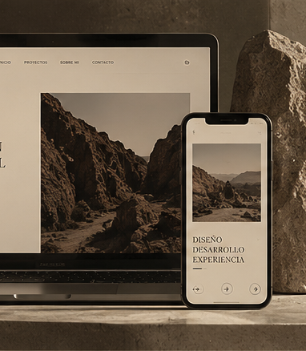
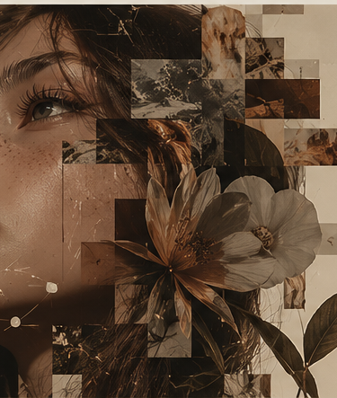
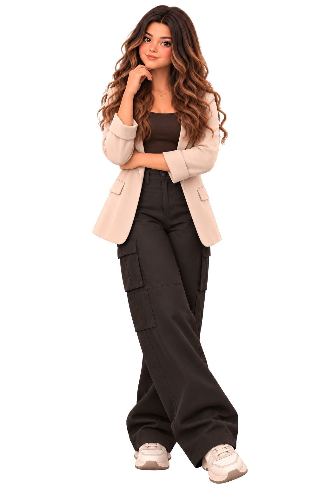

MODE: DESIGNER
The Designer
Branding · Editorial · Tipografía · Composición
La que puede pasar demasiado tiempo intentando decidir si algo está 2px fuera de lugar.
01 / 09 — ENTRAR
Estás dentro de mi cabeza.
Aquí las ideas no se quedan quietas.
MARÍA CAMILA ORTIZ
MACA — Creadora Digital
Diseño · 3D · Web · IA · Narrativa
02 / 09 — ASÍ FUNCIONA MI CABEZA
ASÍ FUNCIONA MI CABEZA
MI MANERA DE
No siempre sé dónde va a terminar una idea. A veces empieza en una imagen, a veces en una pregunta — y a veces, simplemente, en un ¿y si...?
Defiendo la autenticidad frente al simulacro. Creo desde lo que me representa y me hace única.
Cada decisión tiene un propósito. Diseño para comunicar, conectar y generar un impacto real.
Pruebo, rompo, mezclo y vuelvo a construir. La curiosidad es el motor que me mantiene en evolución.
Una buena idea también necesita saber contarse. Creo historias visuales que inspiran, informan y permanecen.
Aprender, adaptar y mejorar es parte del proceso. Creo hoy, con la mirada en todo lo que aún quiero explorar.
¿Y SI...?
¿Y SI LO HACEMOS EN 3D?
¿Y SI LO ANIMAMOS?
¿Y SI LO PROGRAMO?
¿Y SI LO HACEMOS CON IA?
¿Y SI FUNCIONA?
03 / 09 — OBSESIONES
OBSESIONES
Diseño visual, composición, tipografía, color, branding.
3D, animación, interacción.
UX, UI, HTML, CSS, JavaScript.
IA, herramientas nuevas, experimentación.
Narrativa, personajes, conceptos, dirección creativa.
04 / 09 — PERSONALIDADES
MIS MUCHAS PERSONALIDADES
MODE: DESIGNER
Branding · Editorial · Tipografía · Composición
La que puede pasar demasiado tiempo intentando decidir si algo está 2px fuera de lugar.
MODE: 3D ARTIST
Blender · Modelado · Texturas · Iluminación · Render
Entro a modelar una cosa y termino construyendo medio universo.
MODE: DEVELOPER
HTML · CSS · JavaScript · UX/UI
Si funciona, no lo toques.
MODE: EXPERIMENTER
IA · Generación · Prototipos · Nuevas herramientas
¿Qué pasa si...?
MODE: ILLUSTRATOR
Personajes · Concept art · Narrativa visual
Algunas ideas simplemente necesitan ser dibujadas.

IDEAS CONVERTIDAS EN IMAGEN
Exploro historias, emociones y conceptos a través de la ilustración, creando imágenes que comunican y conectan.
→ VER PROYECTOSIDEAS EN TRES DIMENSIONES
Modelo, texturizo y doy vida a ideas a través del 3D, creando objetos, personajes y espacios que pueden existir más allá de la pantalla.
→ VER PROYECTOS
IDEAS QUE TOMAN FORMA
Diseño piezas editoriales que informan, inspiran y permanecen, combinando estética, jerarquía y narrativa visual.
→ VER PROYECTOS
IDEAS QUE FUNCIONAN
Convertir conceptos en experiencias digitales, combinando diseño y código para crear sitios web funcionales, estéticos y centrados en el usuario.
→ VER PROYECTOS
CREATIVIDAD AUMENTADA
Explotar el potencial de la IA como herramienta creativa, generando nuevas formas de expresión, automatización visual y exploración de conceptos.
→ VER PROYECTOS05 / 09 — ARCHIVO
ARCHIVO
Cosas que he creado, construido, diseñado, roto y vuelto a construir.
06 / 09 — LABORATORIO
LABORATORIO
No todo tiene que tener una finalidad. Algunas cosas las hice porque quería saber qué pasaba.
EXPERIMENT_001 · PLAYGROUND

Birrete · Graduación
EXPERIMENT_002 · PLAYGROUND

Bombilla · Idea
EXPERIMENT_003 · PLAYGROUND

Globo · Alcance global
EXPERIMENT_004 · PLAYGROUND

Libros · Conocimiento
EXPERIMENT_005 · PLAYGROUND

Lupa · Investigación
EXPERIMENT_006 · EXPERIMENTAL
Concepto, experimentación, generación y resultados — cómo uso IA dentro de un flujo real de diseño y desarrollo.
07 / 09 — CÓMO TRABAJO
CÓMO TRABAJO
Cada proyecto es un recorrido de exploración, análisis y creación. Este es el proceso que me permite transformar ideas en piezas con propósito.
Referencias, contexto y necesidades reales antes de dibujar nada.
De la idea dispersa a un concepto claro que sostiene todo lo demás.
Pruebo materiales, referencias y direcciones antes de decidir un camino.
Composición, tipografía, modelado o código — lo que la pieza necesite para funcionar.
Reviso, ajusto y pulo hasta que cada detalle esté intencionado.
Preparo la pieza para el mundo real: exportar, publicar, convertirla en algo usable.
08 / 09 — OK. AHORA SÍ. YO.
ESTUDIANTE DE CREACIÓN DIGITAL
Soy María Camila, aunque dentro de este pequeño universo probablemente me encuentres como MACA.
Estudio Creación Digital y me gusta moverme entre disciplinas que, a primera vista, parecen no tener mucho que ver: diseño una identidad, modelo algo en 3D, programo una web, experimento con IA, dibujo — y después intento descubrir cómo hacer que todo eso tenga sentido.
Todavía estoy descubriendo exactamente qué quiero hacer. Pero sí sé algo: no quiero crear siempre de la misma manera.
HABLEMOS09 / 09 — ¿QUÉ HACEMOS AHORA?
BUENO...
Ya viste un poco de lo que pasa dentro de MACA. Ahora quiero saber qué pasa dentro de tu proyecto.
Gracias por escribir. Te responderé lo antes posible a tu correo.
MACA.OS — END OF EXPERIENCE. OR MAYBE NOT.

404: PERSONALITY FOUND